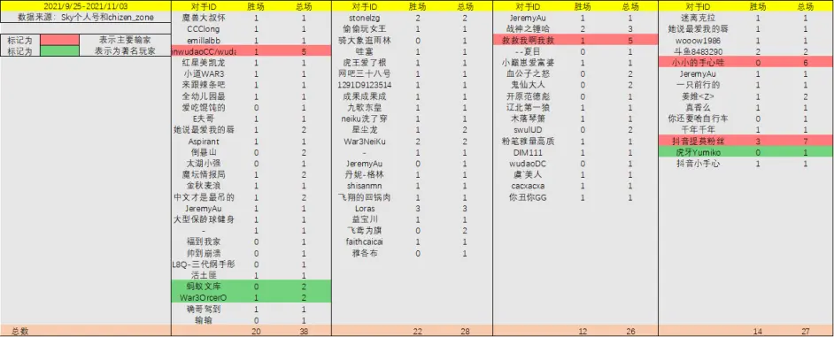

【游戏攻略】SKY天梯直播数据全分析 (9/25-11/03)
数据来源：
@Sky 李晓峰 的 B 站空间
@chizen_zone 的直播录屏
2021/9/25 - 2021/11/03 共 119 场游戏。
被统计的数据
注意：
这只是能搜集到的 119 场游戏的分析，不能完全代表盖哥的水平！
以下分析也只是针对这 119 场游戏。
总览

对手 ID 一览
胜率胜场概况
胜场分析
胜率分析
# 以下为分种族对战总结
# 在对阵 ORC 时
对阵 先知 + 老牛 共 13 场败局 占总败局 72%
败局的英雄组合：
首发 100% 大法师
二发 61% 山丘 30% 熊猫
对阵 先知 + 老牛 仅有 AM + 兽王 组合 3 场全胜。但数据量太小，没有代表性。
# 在对阵精灵时
AM + 娜迦 组合 贡献了 11 场胜场，胜率高达 91%
三农民 组合 贡献了 5 场胜场，胜率高达 83%
败局 大多集中为 1 本 TR 和 2 本 TR
# 在对阵亡灵时
首发山丘胜率接近为 0%，无论二发什么英雄
首发圣骑士 仅 2 次，但创造了两次全胜的战绩
首发小黑 仅 1 次，但也赢了
败局 败法非常分散，咋输的都有
胜局 大多集中为 3 本三流氓成型的狮鹫骑士
# 在对阵人族时
大法 + 山丘 拼操作，是最常见的胜法
对阵 大法 + 熊猫 组合，目前战绩全败
# 以下为其他总结
# 直播中与 Sky 交手过的知名对手
War3OrcerO：B 站 UP，10 年 ORC 玩家，WAR3 解说
虎牙 Yumiko：玉米，职业 War3 玩家，曾获得国家级冠亚军
蚂蚁文库：长期霸居 War3 国服天梯榜首
# Sky 最难打的对手
救救我啊我救 不死族 1 胜 5 负
小小的手心哇 人族 1 胜 7 负
抖音提莫粉丝 人族 3 胜 7 负
douyinwudaoCC/wudaoOC 兽族 1 胜 5 负
# 一些娱乐性的统计
有超过 16 名游戏玩家对战 sky 100% 胜率，因为大多只打了一场，还赢了
但是其他只和 Sky 打了一场的玩家，大部分都输了
WAR3 并没有想象中玩家那么少，至少很多玩家和 Sky 只打过一场
# 关于直播中的一些常见问题
1. 是直播么？是重置版么？
答：是，是重置版，用的旧版模型
- 中文语音包哪来的？有什么好处？
答：重置版自带，可以更直观的提醒玩家
一些必要的信息，包括被攻击，矿量
3. 当前平台？游戏版本？
魔兽争霸 3 官方对战平台。游戏版本 1.3.2
如果你了解版本命名规则，会明白，动中间的数字意味着 “不改变框架” 的 “大规模调整”
所以 1.3.2 和老玩家熟悉的 1.2.X 有很大区别
4. 当前 1.3.2 版本需要知道的事情？
(1) 目前强度排序 兽族 / 亡灵 > 人族 / 精灵
(2) 兽族的主流首发英雄是 先知 而不是 剑圣，主要是因为 剑圣 被削了
(3) 精灵族主流首发英雄是 KOG 而不是 DH，主要也是因为 剑圣 被削了
5. 当前 1.3.2 版本的其他改动？
大法师的辉煌光环削弱
水元素攻击力提升，血量减少
破法者的护甲削弱
兽栏和灵魂归宿的改动
剑圣疾风步削弱，跳劈削弱
水泥塔增强，直升机增强…
具体可以看右侧的二维码
1.24 到 1.32 改动
# 其他一些私货观点（介意请跳过）
# 1. 真的有人窥屏吗？
有，但是极少，以我作为老玩家的视角，大约盖哥直播 10 天能遇到一个。
不是所有的打野和开矿被抓都是窥屏。
如果你还记得 06 年 07 年的十大经典战役，当年打野和开矿被抓是常态。
从那个时代走来的玩家，对于每个人的练级习惯，开矿时机都有足够的了解。尤其是对 Sky 这种知名选手，猜测一波练级路线都是正常操作。
而且，认为全是窥屏的弹幕从来没考虑过一个问题：
就算窥屏，他也只能窥 Sky 一个人而非所有人。
像 wudao / 文库 一样的职业主播，每天要打 N 局天梯，单靠窥一个人的屏怎么可拿到天梯前 3 名，甚至天梯第一名？
# 2. 弹幕在教世界冠军玩游戏？
这句话放到 8 年前当然是个笑话。但是在现在，抱歉还真不完全是。
最大的问题在于：游戏版本变了。
电竞游戏，永远摆脱不了一件事 一代版本一代神。
上半部分的视频里已经说过了，现在的版本是 1.32，不是盖哥熟悉的 1.24 版本。有多少观众如果不看上面视频，甚至不知道兽族已经大改，重新分配了出兵建筑的兵种。这就像，篮球里突然把篮球的直径加大了 10cm，乔丹来了依旧也会不适应。
盖哥已经很久没打职业了，无论从节目效果还是从实际，都可能适当需要和弹幕互动，被弹幕 “告知” 一些新版本的打法，这对直播绝对有好处。
# 3. 其他的其他
盖哥是我们 90 后的青春。但是青春不是用来像饭圈里的偶像一样守护的。
我希望大家别把饭圈那套 “守护最好的哥哥”，“黑”，“黑粉” 那套玩意带到盖哥的直播间。
我也希望某些激进的粉丝能理解，盖哥以前是世界冠军，和现在他只是个想冲天梯第一的游戏主播没有任何冲突。
换言之，盖哥现在能打游戏给我们看，就足够了，这才是真正把盖哥当青春的观众的心态。
盖哥状态不好时，需要的是鼓励，是单纯的鼓励和理解，而不是现在部分激进的粉丝无脑吹盖哥，无脑诋毁其他玩家。
总之，说了这么多，也是希望大家看直播时能放平心态，少一些嘲讽，多一些对当前游戏环境的了解，多一些对天梯其他玩家的了解。
我相信，盖哥也不想看到弹幕吵来吵去。对战斗环境的分析，对对手打法的分析，对盖哥的鼓励和支持，才是更重要的。
我是御坂初琴，一个从高中开始打 WAR3 的玩家，也是盖哥的一个普通老粉。希望这期视频能对盖哥有所帮助，对其他普通老粉们有所帮助。我们下期视频